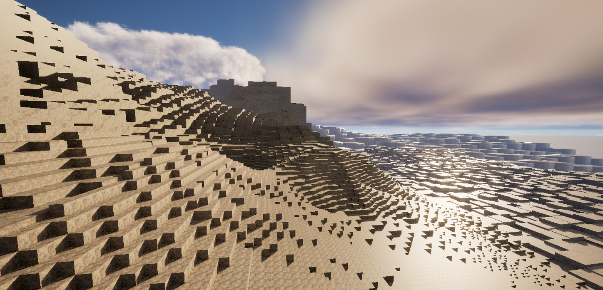

Intro
I'm currently in the devlopment of this game called ManyWorlds. At least that's the working title. So far, all I've created is a minecraft style terrain gen with some differences:
- Chunks are generated by seed on demand and never saved
- Chunks are in a heirachy. (see explanation down below)
- World height limits are -12,000 to 12,000 meters
- Blocks are 0.8 m cubes instead of 1 m cubes (for more detail work)
- Erosion with lakes, streams, rivers (that flow down hill and make sense)
Here's my current list of features that I think would be awesome
- Worlds are in space, and there are as many worlds as there are possible seeds (you can travel and explore new worlds)
- Plant Generation
- Animal Generation
- Building Generation
- Building with blocks and other shapes
- Vehicle building (build a space ship!)
- Bone Breaking
- Wizardry
- Trading And Economies with Aliens
- Character Custimization
- Taming of Animal Aliens
- Backflips/Aerial Control
- Physics Toys
- Circuits/Redstone style stuff
- Clothes/Clothes Designing
- Explosives
- Painting On Blocks
- Stealing with Consequences
- Alien Wars
- Cooking and Potion Making
- Hungar Increases Carrying Capacity (Also makes you larger or thinner)
Eventually I'd also like to have multiplayer. With that I'd like to have these features
- Play with LAN or Steam
- Online Servers
- Run for office on a Planet
- Conquer other Planets
- Proximity Chat
Here's some other ideas I'm not sure about
- Have a Baby?
- Vampirism
Terrain Gen
I've been doing this by using a heirachy of chunks. The first chunks I load in are 2097152 blocks wide. Each of these is split into 256 chunks that are 131072 blocks wide. Each of these is also split up and split up again in this heirachy
- 2097152
- 131072
- 8192
- 512
- 64
- 16
- 8
- 4
- 2
- 1
This has allowed me to sort of do a level of detail esk thing, where I load in a smaller amount of actual blocks nearest to the player, and then load larger and larger place holders for chunks farther away. Here's one of the early renders I got working:
Pretty cool eh! You can see that farther out in the distance the blocks are larger. This allows me to render out ~10,000m for the same amount of blocks as rendering 256m in minecraft. I thought this would be nice way to allow you to see more of a long distance view in the game. It does come at the cost of blockiness farther out though.
The image above was taken before I implemented erosion or did anywork on rendering different types of blocks like grass or different kinds of rock. Planning the heirachy was a bit tricky since I had to divide the chunks up evenly for each sub group. To figure this out I drew this diagram/picture which I thought was actually kind of pretty to look at as well:

Here the pink squares are 512 block chunks, and then the smallest red squares are the actual blocks. The player would be in the center of this image.
For the past few months I've been struggling with erosion which turned out to be really complicated (haha no kidding).
My basic system is the following
- Make gradual decents down Terrain
- Run rivers down slopes
- create a few lakes
Sounds simple right? WRONG!!!
One of the most challenging aspects of this is that I don't load in all the world chunks at once.
I've found that I have to start at the highest level chunk, run the rivers around it's sub chunks, and at that point agree on where the rivers should connect between those sub chunks. Tricky!
Then once I start generating those sub chunks, I have to make sure I get the river to come out at the previously agreed upon point. Through many attempts and stepping with the debugger, I've arrived at this system
- Start at each sub chunk and make a gradual downhill slope to the chunk exit
- Explore Outwards from chunk exits to make paths
- Make the actual rivers through the chunk
- Make little rivers from each sub chunk to one of the main rivers
- Make some random lakes for fun
Something that really helped was making a way to visualize the chunks while I was in the debugger. Since I was running the terrain gen continuously, I couldn't view the terrain in the game, so I made a little tool that printed out the chunk to a file. Here's a screenshot of the output of this:

Kind of hard to see, but the little arrows indicate the way water is flowing and the number in the bottom left of each chunk (square) is the height of that chunk. Key:
- Arrows show water flow direction
- Numbers next to arrows show the flow amount
- Number in the bottom left is the chunk height
- Number in the top left is the chunk index (not important)
- La means a chunk is a lake
I'm still currently debugging this but as I've got to know and understand this problem I've been able to simplify my solution a lot. I've noticed with problems like this, you typically have to create a failed solution so you can get to know the problem better. Then the second time around you can make a really good solution. Sometimes it takes more tries than that, but usually I've never had to restart more than once (thankfully).
Wizardry
Here's my ideas for wizardry. Currently I haven't done any work on this
- Spells work by using stuff in another dimension
- Raw Materials go in, then anything can come out
- Summon lightning from there
- Summon fire
- Summon any element or material
- Healing Spells
- Spells are done by moving mouse or joystick to a certain direction
- Up + Left is more fire, Lightning, light waves
- Up + Right is gases
- Left is Liquids different Elements
- Right is Solids different Elements
- Down is Healing
- It's all on a gradient, Down + Right you might heal them with a metal arm
- Center or Joystick click is entering the Dimensional relm
- You can go into the dimension, and travel instantly to another place
- Inside it look like a dark matrixy kind of place? Maybe non-euclidian Geometry
Dev Log
2/21/2024
Currently I've been working on the erosion (same as always). I decided to do the river tracing differently then I was previously. Now we're starting from outflows and stepping up until we reach all subchunks in a chunk. This is much more efficient then trying to walk from each index to an outflow. The old method was exceptionally complicated when going through lakes or flat areas, where it isn't clear which way is downhill or towards the outflow.
Either way, I have high hopes for this method which seems to be less complicated and more efficient. I also think it might be less likely for infinite loops or other bad crashes to happen. We'll see though.